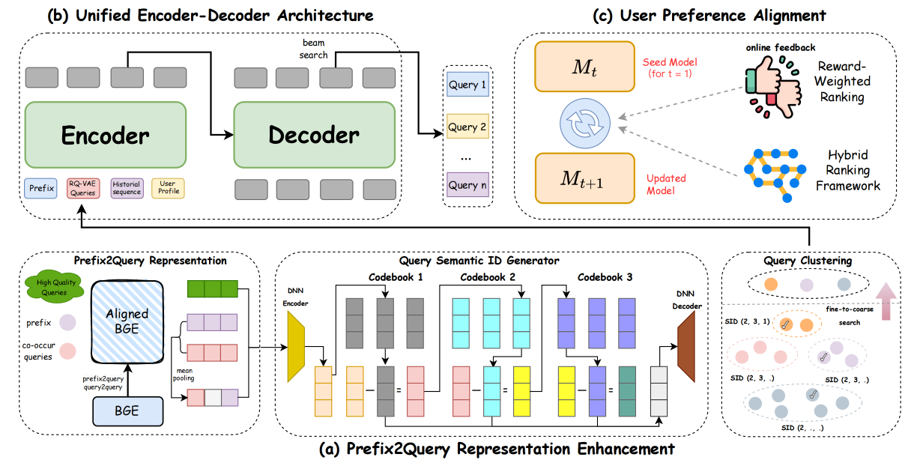
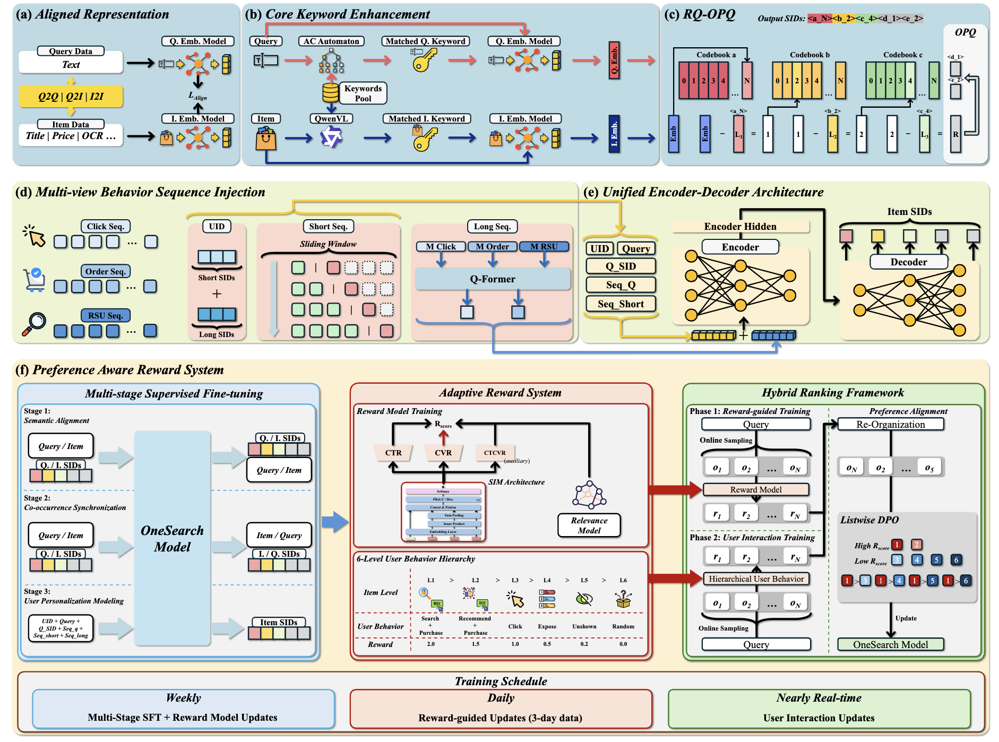

7.2. 查询补全与商品检索¶
在推荐场景中，OneRec 通过用户历史行为序列推测用户的潜在兴趣，输入与输出均是封闭词表的物品 ID。然而，电商搜索面临着截然不同的挑战：用户通过明确的文本查询表达意图，系统需要在强相关性约束下从海量商品库中返回精准匹配的结果。这种“文本查询 → 商品结果”的映射涉及开放词表（用户可输入任意查询）与封闭词表（商品库有限）的混合处理，以及查询理解、商品语义匹配、个性化排序等多层次任务。
传统电商搜索系统同样采用多阶段级联架构（MCA）：查询理解模块负责纠错、改写和意图识别；召回模块通过倒排索引和向量检索从数亿商品中筛选出数千候选；预排序和精排模块依次进行粗细粒度排序。这种架构在电商场景下的问题尤为突出：
查询与商品检索的解耦：查询理解、召回、排序各自优化独立目标，导致查询意图在传递过程中损失
冷启动与长尾问题：新上架商品缺乏交互数据，难以通过倒排索引召回；低频查询缺乏历史共现模式，难以精准匹配
商品信息噪声：商品标题堆砌大量关键词（如“2024新款韩版修身显瘦连衣裙”），传统文本编码器难以识别核心语义
为了从根本上解决这些问题，OneSug 和 OneSearch 分别针对电商搜索链路的前半段（查询补全）和后半段（商品检索）提出了端到端生成式解决方案。它们共享统一的生成式架构哲学，但在输入输出空间、ID 设计、序列建模等方面展现出不同的设计权衡。
7.2.1. OneSug：查询补全生成¶
查询补全（Query Suggestion）是电商搜索的第一道关口：当用户输入前缀“红色连”时，系统需要实时生成完整查询候选（如“红色连衣裙”、“红色连帽衫”）。传统电商平台通常采用多阶段级联架构（MCA）：首先通过前缀树（Trie）进行粗召回（从 \(10^8\) 候选查询中筛选 \(10^4\) 个），然后经过预排序（筛选至 \(10^2\) 个）和精排，最终展示 16 个查询候选。这种架构存在两个核心问题：前序阶段的性能瓶颈限制了后续阶段的优化上界，以及各阶段独立优化目标导致全局次优。
OneSug 将查询补全重新定义为端到端的条件文本生成任务 (Guo et al., 2025) ：
通过统一的生成式架构直接从前缀和用户上下文生成候选查询，绕过传统的多阶段链路。其核心挑战在于：
短前缀的语义歧义：前缀通常仅 1-2 个字（如“苹”可能指水果或手机），缺乏明确意图信号
个性化与流行度的平衡：既要捕获用户历史偏好，又要推荐高转化查询
多层级用户反馈的精细化建模：电商搜索日志包含订单、商品点击、查询点击、展示等多级反馈，如何利用这些信号优化模型的排序能力？
实时性约束：查询补全需在 100ms 内返回结果，对模型推理速度要求极高
Encoder-Decoder 架构
OneSug 采用 Encoder-Decoder 架构（基于 BART 或 mT5），将查询补全转化为序列到序列生成任务。编码器需要整合多源异构信息以充分表达用户意图，解码器则以自回归方式生成目标查询。
{kind=link}

图7.2.1 OneSug 的三阶段架构¶
图说明：OneSug 架构包含三个核心模块：(a) PRE 模块通过语义与协同查询增强短前缀表示；(b) Encoder-Decoder 融合用户多尺度特征生成候选查询；(c) RWR 策略利用多级交互反馈优化排序能力。
前缀-查询语义对齐
对于纯文本前缀 \(p\)，使用预训练的 Text Encoder（BGE）提取语义嵌入 \(\mathbf{e}_p \in \mathbb{R}^{768}\)。然而，通用 NLP 模型在电商领域的语义空间与实际业务特性存在偏差。OneSug 对 BGE 编码器进行领域对齐微调：从搜索日志中挖掘高质量的 prefix-query 和 query-query 共现对（使用 ItemCF 类算法），通过对比学习使协同相关的查询在嵌入空间更接近：
这使编码器同时捕获语义相似性（如“连衣裙”与“裙子”）和行为共现性（同一用户常搜的查询对）。实验表明，对齐后的 BGE 模型在查询检索任务上的语义相关性从 0.67 提升至 0.81。
前缀表示增强（PRE 模块）
短前缀的语义表示往往不足以支撑精准生成。OneSug 提出 Prefix2Query Representation Enhancement (PRE) 模块，通过检索与前缀语义和协同相关的查询来增强其表示。
具体而言，对于前缀 \(p\)，从历史日志中检索与其共现的高质量查询集合 \(\{q_1^c, q_2^c, ..., q_k^c\}\)（例如，用户输入“红色连”后常继续搜索“红色连衣裙”、“红色连帽卫衣”等）。这些查询的平均嵌入被加权融合到前缀表示中：
OneSug 在训练时设置增强权重 \(w=0.5\)。消融实验表明，该策略使 MRR 相比无增强版本提升 2.3%，但当 \(w>0.7\) 时会引入过多噪声导致性能下降。
为了高效检索相关查询，OneSug 借鉴生成式推荐中的语义 ID 思想，使用 RQ-VAE 将查询编码为分层离散码（4 层，每层码本大小 512），在推理时通过从粗到细的层级匹配策略快速定位相关查询，将计算复杂度从向量检索的 \(O(N \cdot d)\) 降低到码本查找的 \(O(W^C)\)。
用户行为序列与画像特征
除了增强后的前缀表示，编码器还整合了两类用户特征：
短期历史查询：用户近期 \(n=10\) 条历史查询 \(\mathcal{H}_u = \{q_1^h, q_2^h, ..., q_n^h\}\)，直接反映当前会话意图。实验表明超过 10 条会引入噪声（如数月前的偶然搜索），导致 MRR 下降 1.2%
用户静态画像：年龄、性别、地域、消费等级等特征 \(\mathcal{U}\)，离散化为 Embedding 后拼接，捕获用户的长期偏好
值得注意的是，OneSug 不引入商品交互特征（如点击过的商品类目），因为查询补全发生在用户输入阶段，尚未产生商品曝光行为。编码器的输入构造为：
其中 \(\mathcal{H}_p\) 是 PRE 模块检索到的相关查询序列。编码器输出为：
解码器：自回归查询生成
解码器采用标准的 Causal Transformer 结构，以自回归方式生成目标查询的每个子词（subword）。训练时使用 Teacher Forcing 策略，最小化 Next Token Prediction 损失：
在推理时，OneSug 使用 Beam Search 生成多个候选查询（束宽 \(K=32\)，在候选多样性和推理延迟小于100ms之间达到最佳平衡）。为避免模型偏好生成短查询，引入长度归一化评分函数：
奖励加权排序策略（RWR）
仅依靠 Next Token Prediction 训练的生成模型往往无法区分不同候选查询的业务价值差异。OneSug 的核心创新在于提出 Reward-Weighted Ranking (RWR) 策略，将电商搜索日志中的多级用户反馈转化为精细化的偏好信号。
六级交互反馈与奖励建模
OneSug 将用户在搜索链路中的交互行为划分为 6 个层级（从高到低）：
层级 |
反馈类型 |
业务含义 |
基础权重 \(\lambda\) |
|---|---|---|---|
Level 1 |
Order |
用户通过该查询完成购买 |
2.0 |
Level 2 |
Item Click |
用户点击查询返回的商品 |
1.5 |
Level 3 |
Click |
用户点击该查询 |
1.0 |
Level 4 |
Show |
查询被展示但未点击 |
0.5 |
Level 5 |
Not Show |
查询在召回池但未展示 |
0.2 |
Level 6 |
Rand |
随机采样的负样本 |
0.0 |
对于每个 <前缀, 查询> 对，其奖励分数为：
其中 \(pi\) 是该查询在对应层级的归一化出现频率。这种设计使得高频交互的查询获得更高奖励。举个具体的例子：
“手机 → 手机性价比排行”被点击了50次（等级3）: \(r = 1.0 \times e^{50/总点击数}\)
“手机 → 手机壳”产生了20个订单（等级1）: \(r = 2.0 \times e^{20/总订单数}\)
对比偏好对构造
从 6 个层级中构造 9 类偏好对（选择正样本层级 > 负样本层级），例如： - <Order, Show>（强正 vs 弱负） - <Item Click, Not Show>（中正 vs 强负） - <Click, Rand>（弱正 vs 随机负）
对于每个偏好对，用户的偏好差异 \(rw_{\Delta}\) 定义为：
其中 \(q_w\) 是正样本（win），\(q_l\) 是负样本（lose）。较小的 \(rw_{\Delta}\) 值对应难区分的样本对（如 <Click, Show>），训练时需要更大的梯度权重以学习细微差异。
混合偏好对齐损失
OneSug 在标准的 DPO（Direct Preference Optimization）损失基础上引入两项改进：
奖励加权：通过 \(rw_{\Delta}\) 动态调整不同样本对的学习权重
目标奖励边界 :math:`delta`：强制正负样本的奖励差异至少为 \(\delta\)，提升区分度
结合 pair-wise 和 list-wise 建模，最终损失为：
其中隐式奖励 \(\hat{r}_\theta(x_u, q) = \beta \log \frac{\pi_\theta(q|x_u)}{\pi_{\text{ref}}(q|x_u)}\)，\(\pi_{\text{ref}}\) 是 NTP 训练后的参考模型，\(\alpha\) 是 SFT 损失权重以保持生成质量。
OneSug 小结
OneSug 通过 Encoder-Decoder 架构和 RWR 策略，成功地将查询补全从多阶段级联系统转变为端到端的生成式模型。PRE 模块通过语义和协同查询增强短前缀表示，多视角特征融合捕获用户意图，六级交互反馈构建的奖励系统使模型能够精准理解用户偏好差异。这种统一的生成式框架不仅简化了系统架构，更重要的是实现了全局优化，避免了传统多阶段系统中前序阶段的性能瓶颈。
然而，当用户完成查询输入后，系统面临着更加复杂的挑战——从数亿商品中检索最相关结果。这要求同时处理开放词表的查询和封闭词表的商品，并引入更强的相关性约束和个性化排序能力。接下来我们将深入探讨专门针对商品检索的端到端生成模型 OneSearch，它需要解决三个核心问题：
商品 ID 设计：如何为商品构造融合语义与协同信号、同时保留层次结构和单品区分度的 ID？
相关性建模：如何建模查询-商品的细粒度相关性，确保“红色连衣裙”不会返回“蓝色连衣裙”？
噪声与冷启动：如何处理商品标题的关键词堆砌问题，以及新上架商品的冷启动困境？
7.2.2. OneSearch：商品检索生成¶
当用户在电商平台输入“红色连衣裙”并按下搜索键，系统需要在一秒内从数亿商品中找到最匹配的结果。在传统电商搜索系统中，这个过程需要经历查询理解、倒排索引召回、向量检索、预排序、精排等多个阶段。每个阶段都有独立的模型和优化目标，导致查询意图在传递过程中不断损失——一个相关商品可能在早期阶段就被过滤掉，无论后续排序模型多么精准也无法挽回。
电商搜索的三大独特挑战
与我们之前讨论的视频推荐（OneRec）和查询补全（OneSug）相比，电商商品检索面临着更加复杂的约束条件：
第一，强相关性约束是第一优先级。在推荐场景中，系统可以基于用户历史行为推荐风格相似但类目不同的商品。例如，用户喜欢运动鞋，推荐运动服也是合理的。但在搜索场景下，相关性是不可妥协的底线——用户搜索“红色连衣裙”，即使该用户历史上经常购买蓝色商品，返回“蓝色连衣裙”也是严重的相关性违反。这要求系统必须先满足相关性，再优化个性化，这与推荐系统的优化目标存在本质差异。
第二，商品信息充斥着噪声和冗余。为了提高曝光率，商家往往在商品标题中堆砌大量关键词。例如，一件连衣裙的标题可能是“2024新款秋季韩版修身显瘦长袖连衣裙女学生小个子甜美气质裙子百搭”，包含多达十几个属性词，且语义顺序混乱（品牌、风格、功能词随意排列）。更糟糕的是，商家可能添加不相关的热门关键词来蹭流量。传统的文本编码器（如 BERT）在处理这类文本时会被冗余信息淹没，难以识别真正的核心属性。
第三，语义层次与商品独特性的平衡问题。理想的商品表示需要同时满足两个看似矛盾的需求：一方面，系统需要理解商品的类目层次结构（“服装 → 女装 → 连衣裙 → 韩版连衣裙”），这样才能在粗粒度上匹配查询；另一方面，系统必须保留每个商品的独特属性（具体款式、品牌、价格），否则所有“韩版连衣裙”都会被映射到相同的表示，无法区分哪件是用户真正想要的。
OneSearch 的设计理念
OneSearch (Chen et al., 2025) 的核心思想是将传统的“查询 → 召回 → 预排序 → 精排”多阶段流程统一为一个端到端的序列生成任务：
这意味着模型直接输入查询文本和用户行为特征，输出一个有序的商品列表。为了实现这一目标，OneSearch 设计了四个核心模块，它们分别解决上述三大挑战：
关键词增强的分层量化编码（KHQE）：为每个商品构造一个融合语义与协同信号的多层离散 ID，既保留类目层次又突出核心属性，同时增强查询-商品相关性约束
多视角行为序列注入（Mu-Seq）：从用户 ID 构建、短期序列、长期序列三个角度建模用户偏好，在保证相关性的前提下实现个性化
统一的 Encoder-Decoder 生成架构：将查询理解、商品召回、个性化排序融合到一个生成模型中
偏好感知奖励系统（PARS）：通过多阶段监督微调和自适应奖励模型，学习用户的精细化偏好差异，同时保持相关性约束
下面我们逐一展开这些技术细节，并分析它们如何在工业系统中落地。
{kind=link}

图7.2.2 OneSearch模型结构图¶
图说明：OneSearch 的完整架构包含四个核心模块：(a) KHQE 通过关键词增强和分层量化为商品构建语义 ID；(b) Mu-Seq 从三个视角注入用户行为序列；(c) Encoder-Decoder 架构融合所有特征进行商品生成；(d) PARS 通过多阶段微调和奖励系统优化个性化排序能力。
7.2.2.1. 关键词增强的分层量化编码¶
在深入技术细节之前，我们先理解一个核心问题：在生成式框架中，如何表示数亿个商品？
传统的推荐系统使用原子 ID（如
item_12345678）来唯一标识每个商品。但这种方法在生成式框架中遇到两个致命问题：第一，数亿商品需要数亿词表大小，Softmax
层的计算复杂度为
\(O(|\mathcal{V}|)\)，在如此庞大的词表下完全不可行；第二，原子 ID
是随机数字，不包含任何语义信息，模型无法学习商品之间的语义关联（例如“红色连衣裙”和“红色长裙”在语义上相近，但它们的原子
ID 可能毫无关系）。
OneSearch 采用分层语义 ID（Hierarchical Semantic ID）策略，将每个商品映射为一个多层离散码序列：
例如，某件韩版连衣裙可能被编码为
[3856, 724, 385, 142, 201]。这是一个长度为 5
的离散序列，词表大小约 6000 个唯一 token（4096 + 1024 + 512 +
256 + 256），远小于原子 ID 的数亿规模。这个 5
层编码不是随意设计的，而是经过精心设计以平衡语义层次（前 3
层）和商品独特性（后 2 层）。
让我们看看这个编码是如何生成的。
商品表示学习
要构建有意义的语义 ID，第一步是为每个商品生成一个高质量的嵌入向量。这个向量需要同时捕获两类信息：内容语义（商品本身是什么）和协同信号（用户如何与商品交互）。
OneSearch 从搜索日志中收集多源信息作为商品的原始特征：
文本信息：商品标题、详情页 OCR 文本、关键词标签
结构化属性：价格区间、类目层级、品牌信息
统计特征：近期点击率、转化率、加购率等业务指标
这些异构特征被输入蒸馏后的 BGE 模型（一个轻量级的文本编码器），生成初始的商品嵌入 \(\mathbf{e}_i \in \mathbb{R}^{768}\)。但是，通用的文本编码器往往偏向语义相似性，而忽略了电商场景下的协同过滤信号。例如，“苹果手机”和“苹果电脑”在语义上都包含“苹果”品牌，但用户行为模式可能截然不同。
为了让嵌入同时反映语义关联和行为协同，OneSearch 设计了多类对齐任务：
query-query 和 item-item 对比学习（\(\mathcal{L}_{q2q}\), \(\mathcal{L}_{i2i}\)）：从搜索日志中挖掘协同相关的查询对和商品对（使用 ItemCF、Swing 等算法），通过对比学习拉近它们的嵌入距离。例如，用户搜索“连衣裙”后常搜“长裙”，这两个查询在嵌入空间中应该接近
query-item 对比学习（\(\mathcal{L}_{q2i}\)）：确保查询和商品在同一语义空间，为后续的检索任务奠定基础
分层反馈对齐（\(\mathcal{L}_{\text{rank}}\)）：对不同用户行为层级（曝光、点击、下单）的查询-商品对赋予不同的 Margin 权重，学习协同信号的细微差异。例如，被点击的商品应比仅曝光的商品更接近查询
难样本相关性校正（\(\mathcal{L}_{\text{rel}}\)）：对于余弦相似度接近阈值的难样本对，使用 LLM（如 GPT-4）基于完整上下文评分相关性，然后让 BGE 模型拟合这个分数，提升在边界样本上的判断能力
总体对齐损失为这些子任务的加权和：
其中 \(\lambda_i\) 是可调节的权重系数，可以根据不同的业务目标进行调整。
核心关键词增强
经过对齐训练后，商品嵌入 \(\mathbf{e}_i\) 已经同时包含语义和协同信号。但电商商品标题中充斥着大量冗余词（如“爆款”“包邮”“限时特价”），这些营销词会稀释真正的核心属性（如品牌、颜色、材质）的表示权重。
OneSearch 的解决方案是显式提取并增强核心关键词。具体而言：
构建核心属性词表：快手电商团队通过命名实体识别（NER）技术，从历史搜索日志中识别出 18 类结构化属性，包括：实体（Entity）、修饰词（Modifier）、品牌（Brand）、材质（Material）、风格（Style）等。对每类属性，根据点击日志按 PV 降序排列，选择高频词作为核心词表
快速关键词匹配：使用 Aho-Corasick 自动机（一种高效的多模式串匹配算法，能在 \(O(n)\) 时间内在文本中同时查找多个模式串）在商品标题中快速匹配核心关键词。对于图片类商品，使用多模态模型（Qwen-VL）识别图片中的关键视觉属性
关键词增强表示：假设商品 \(i\) 匹配到 \(n\) 个核心关键词 \(\{k_1, k_2, ..., k_n\}\)，每个关键词的嵌入为 \(\mathbf{e}_{k_j}\)。商品的优化表示为：
这种 50%-50% 的加权平均使得核心属性在后续量化编码中占据主导地位，同时保留原始嵌入的完整语义信息。查询的表示也使用相同的增强策略，这个简单的技巧在实验中带来了显著提升。
RQ-Kmeans 语义层次编码
现在我们有了高质量的商品嵌入 \(\mathbf{e}^o_i \in \mathbb{R}^{768}\)，下一步是将连续向量转换为离散的分层码。OneSearch 使用残差量化 K-means（Residual Quantization K-means, RQ-Kmeans）来实现这一目标。
RQ-Kmeans 的核心思想是逐层提取语义信息，并将残差传递到下一层。
这个过程可以类比为逐层细化的类目树：
L1 层（码本大小 4096）：捕获最粗粒度的类目，如“服装”、“数码”、“食品”、“家居”
L2 层（码本大小 1024）：在 L1 的基础上进一步细分，如“服装”下的“女装”、“男装”、“童装”
L3 层（码本大小 512）：捕获更细粒度的子类目，如“女装”下的“连衣裙”、“T恤”、“牛仔裤”
举个具体例子：一件“红色韩版连衣裙”可能得到编码
[L1=2341, L2=567, L3=89]，其中： - L1=2341 代表“服装”这个大类 -
L2=567 代表“女装-裙装”这个子类 - L3=89 代表“连衣裙-韩版风格”这个细分类目
关键优化：第 3 层的平衡约束
为了提高码本利用率，一个直接的想法是在所有层应用平衡 K-means，强制每个聚类中心包含相近数量的商品。然而，OneSearch 发现在早期层（L1, L2）强制平衡会导致层次聚类崩溃——细粒度属性不同的商品被强行分到同一聚类，丧失了语义区分度。
OneSearch 的解决方案是仅在 L3 层应用平衡约束，让 L1 和 L2 自由聚类捕获主要语义，然后在 L3 层通过平衡约束实现细粒度区分。
OPQ 商品独特性编码
经过 3 层 RQ-Kmeans 后，我们得到了商品的分层语义码
[L1, L2, L3]。但此时残差向量 \(\mathbf{e}'\)
中仍然包含重要信息——这是商品的独特属性，如具体款式、品牌、价格段、具体设计细节等。如果直接丢弃这些残差，会导致大量商品被映射到相同的语义
ID，无法区分。
例如，两件都是“韩版连衣裙”的商品可能具有相同的 [L1, L2, L3]
编码，但一件是“Zara 品牌 299 元”，另一件是“无品牌 99 元”。如果只用前 3
层编码，这两件商品在生成模型中将被视为完全相同，这显然不合理。
OneSearch 引入 优化乘积量化（Optimized Product Quantization, OPQ） 对残差进行编码。OPQ 的核心思想是将高维向量切分成多个子向量，分别进行量化：
1. 将残差向量 e' ∈ R^768 切分为 M=2 个子向量
sub_1 = e'[0:384], sub_2 = e'[384:768]
2. 对每个子向量独立进行 K-means 聚类（码本大小 256）
OPQ1 = argmin ||sub_1 - Codebook_OPQ1[c]||_2
OPQ2 = argmin ||sub_2 - Codebook_OPQ2[c]||_2
最终，每个商品的完整语义 ID 为 5 层编码：
为什么不对所有层都用 OPQ？ OneSearch 团队也尝试过将 RQ 的所有层都用
OPQ 编码（配置 4*2/256 和
4*4/256），但发现性能大幅下降。原因是这种做法破坏了层次结构的语义性——失去了“粗粒度到细粒度”的层级关系，导致模型难以学习商品类目的渐进式生成模式。
回顾整个 KHQE 模块，这种精心设计的编码方式，使得 OneSearch 在处理电商商品时，既能理解粗粒度的类目匹配（“用户搜连衣裙，不应该返回手机”），又能捕获细粒度的属性差异（“用户搜红色连衣裙，不应该返回蓝色连衣裙”）。
7.2.2.2. 多视角行为序列注入¶
在传统的电商搜索系统中，用户行为特征通常只在精排阶段才被引入，而且往往是通过简单的特征拼接。OneSearch 提出了一种更系统化的策略：从用户 ID 构建、短期序列、长期序列三个视角注入用户行为，让生成模型能够全面理解用户的偏好和意图。
行为序列驱动的用户 ID
在推荐系统中，常见的做法是为每个用户分配一个随机哈希 ID（如将用户编号
user_98765432
映射为固定维度向量）。这种方法简单高效，但存在两个问题：第一，随机 ID
不包含任何语义信息，兴趣相似的用户在嵌入空间中可能完全无关；第二，由于哈希冲突，不同用户可能被映射到相同的
ID。
OneSearch 的创新在于用用户的行为序列来构造 User ID。具体而言，对于用户的短期点击序列 \(\{s_1, s_2, ..., s_m\}\) 和长期点击序列 \(\{l_1, l_2, ..., l_n\}\)，分别计算加权和：
其中 \(\lceil \cdot \rceil\) 表示向上取整，\(\text{SID}_{s_i}\) 是第 \(i\) 次点击商品的语义 ID。权重系数 \(\lambda_i\) 采用 \(\sqrt{i}\) 的指数归一化，使得越近的行为权重越高，但不像线性衰减那样激进。
最终的用户 ID 是两者的拼接（总长度为 10）：
这种构造方式有两个优势：第一，兴趣相似的用户会得到相近的 ID 表示（类似协同过滤中的隐式反馈矩阵分解）；第二，对于冷启动用户，可以使用平台统计的“查询 → Top 点击商品”作为默认行为序列，避免 ID 为空。
显式短期序列注入
用户最近的搜索和点击行为直接反映当前会话的意图。例如，一个用户在过去 10 分钟内搜索了“运动鞋”、“跑步装备”、“运动袜”，然后输入“护膝”，那么系统应该推断用户正在准备运动装备，而不是其他场景（如医疗护膝）。
OneSearch 将用户最近的历史查询和点击商品显式放入输入序列：
[UserID] [SEP] [Query] [SID_query] [SEP]
[q_1] [q_2] ... [q_n] [SEP] # 最近 n 条历史查询
[SID_{i1}] [SID_{i2}] ... [SID_{im}] [SEP] # 最近 m 次点击商品的 SID
这里有两个设计细节：第一，查询用原始文本，商品用语义 ID。这是因为查询通常很短（2-3 个词），可以直接 Tokenize；而商品标题冗长（十几个词），用语义 ID 更紧凑。第二，序列长度有限制（历史查询 \(n \leq 10\)，点击商品 \(m \leq 20\)），避免输入过长。
滑动窗口数据增强：学习兴趣演化
在训练阶段，OneSearch
使用滑动窗口策略对短期序列进行数据增强。假设用户的完整点击序列是
[i1, i2, i3, i4, i5]，传统训练只会生成一个样本：
输入：[User, Query, i1, i2, i3, i4, i5] → 输出：i_target
但 OneSearch 会生成多个训练样本（最大窗口长度 \(m=5\)）：
样本 1：[User, Query] → i1
样本 2：[User, Query, i1] → i2
样本 3：[User, Query, i1, i2] → i3
样本 4：[User, Query, i1, i2, i3] → i4
样本 5：[User, Query, i1, i2, i3, i4] → i5
这种数据增强有两个好处：第一，让模型学习兴趣的演化过程，而不仅仅是“给定完整历史预测下一个”；第二，自然处理冷启动用户，因为训练时包含了“无历史”或“少量历史”的样本。
Q-Former 长期序列压缩
除了最近的短期行为，用户还有大量的历史交互数据。一个活跃用户可能在过去半年内产生了数千甚至上万次点击、加购、下单行为。这些长期行为反映了用户的稳定兴趣偏好（如偏好性价比、喜欢特定风格、常购买特定品类），但直接放入 Prompt 会导致序列过长，无法处理。
OneSearch 的解决方案是借鉴多模态预训练模型 BLIP-2 中的 Q-Former（Query Transformer） 思想，将长期行为压缩为固定长度的连续表示。具体分为三个步骤：
按行为类型分层聚合
用户的长期行为包含三类：点击序列、下单序列、搜索相关单元（RSU）序列。对于每个商品，首先通过其语义 ID 查表获取 RQ-Kmeans 的聚类中心嵌入（3 层，每层一个向量），然后按层级分别求和：
这样，无论用户有多少历史行为（可能上千条），都被压缩为 \(3 \times 3 = 9\) 个向量（3 类行为 × 3 个层级）。
Q-Former 交叉注意力提取
接下来，使用 \(N_q=128\) 个可学习的查询向量（Query Vectors）\(\mathbf{Q} \in \mathbb{R}^{128 \times 768}\)，通过交叉注意力机制从聚合的行为表示中提取关键信息：
Q-Former 的核心是多层 Transformer，其中查询向量通过交叉注意力（Cross-Attention）与行为聚合向量交互，学习提取最相关的用户偏好信息。最终得到的 \(\mathbf{Q}_{\text{long}} \in \mathbb{R}^{128 \times 768}\) 是固定长度的，无论用户历史行为有多少条。
注入编码器
压缩后的长期行为表示 \(\mathbf{Q}_{\text{long}}\) 作为额外的输入序列，与 User ID、Query、短期序列一起输入 Encoder。由于长度固定（128 个 Token），不会显著增加计算开销。
为什么按层级聚合？ 直接对所有商品嵌入求平均会丢失层次信息。按 L1、L2、L3 分层聚合，可以让 Q-Former 学习到用户在不同粒度上的偏好。例如，L1 层聚合反映用户是否偏好“数码”还是“服装”，L3 层聚合反映用户在细分类目上的偏好。
7.2.2.3. Encoder-Decoder 生成架构¶
有了商品的语义 ID（KHQE）和用户的多视角行为表示（Mu-Seq），OneSearch 需要一个强大的生成模型来整合这些信息，并输出有序的商品列表。OneSearch 选择 BART（Bidirectional and Auto-Regressive Transformer） 作为基础架构，原因有三：第一，BART 是 Encoder-Decoder 结构，编码器可以双向建模查询和用户特征，解码器自回归生成商品序列；第二，BART 有良好的预训练权重，可以快速迁移到电商领域；第三，快手内部对 BART 做了大量架构加速优化，适合工业部署。
编码器：融合查询与用户上下文
编码器的输入是一个异构序列，包含离散 Token（User ID、Query 文本、语义 ID）和连续向量（Q-Former 输出）：
[BOS] <UserID (10 tokens)> [SEP]
<Query 文本> <Query 的 SID (5 tokens)> [SEP]
<历史查询文本序列> [SEP]
<短期点击商品 SID 序列> [SEP]
<长期行为 Q-Former 输出 (128 tokens)> [EOS]
所有元素经过嵌入层后拼接（离散 Token 查表得到嵌入，连续向量直接使用），加入位置编码，输入 Transformer 编码器：
编码器的输出 \(\mathbf{Z}_{\text{enc}} \in \mathbb{R}^{L \times d}\)（\(L\) 是序列长度，\(d=768\) 是隐藏维度）包含了所有输入信息的联合表示。
解码器：自回归生成商品语义 ID
解码器的任务是逐 Token 生成目标商品的 5 层语义 ID。以生成商品
[3856, 724, 385, 142, 201] 为例，解码过程如下：
步骤 0：输入 [BOS] → 预测 L1 = 3856
步骤 1：输入 [BOS, 3856] → 预测 L2 = 724
步骤 2：输入 [BOS, 3856, 724] → 预测 L3 = 385
步骤 3：输入 [BOS, ..., 385] → 预测 OPQ1 = 142
步骤 4：输入 [BOS, ..., 142] → 预测 OPQ2 = 201
每一步通过 Causal Self-Attention（只能看到前面的 Token）和 Cross-Attention（关注编码器输出）生成隐藏状态 \(\mathbf{h}_t^{\text{dec}}\)，然后通过 Softmax 层预测下一个 Token：
训练目标是最大化真实商品语义 ID 的对数似然（Next Token Prediction）：
推理：Beam Search 生成 Top-K 商品
在推理时，OneSearch 使用 Beam Search 生成多个商品候选。Beam Search 一般有两种策略：
约束搜索：强制每层 Token 必须来自预先构建的有效 SID 池（真实商品的 SID 集合），确保生成的 SID 对应真实商品。这需要维护一个 SID 索引，推理时动态过滤无效候选
非约束搜索：允许生成任意 Token 组合，可能产生“幻觉 SID”（不对应真实商品），但推理速度更快
7.2.2.4. 偏好感知奖励系统¶
到目前为止，OneSearch 已经可以通过 Next Token Prediction 生成商品序列。但仅靠 NTP 训练的模型存在一个关键问题：它只学习了“哪些商品与查询和用户行为共现”，而没有学习“用户更偏好哪些商品”。
举个例子，对于查询“红色连衣裙”，以下两个商品都可能在训练数据中出现： - 商品 A：被展示 100 次，点击 20 次，下单 5 次（CTR=20%, CVR=25%） - 商品 B：被展示 100 次，点击 5 次，下单 0 次（CTR=5%, CVR=0%）
如果仅用 NTP 训练，模型会认为这两个商品的“正确性”是相同的（都在训练集中出现），但显然商品 A 更符合用户偏好。OneSearch 通过 偏好感知奖励系统（PARS） 解决这个问题，包含两个核心组件：多阶段监督微调（Multi-stage SFT） 和 自适应奖励系统（Adaptive Reward System）。
多阶段监督微调
PARS 的第一个组件是精心设计的三阶段微调流程，逐步让模型学习从语义对齐到个性化建模的能力。
阶段一：语义内容对齐
BART 是在通用文本语料上预训练的，但 OneSearch 的输入和输出都是语义 ID（SID），而不是自然语言。因此第一阶段的目标是让模型理解 SID 与文本的对应关系。具体包含三个子任务：
子任务 |
输入 |
输出 |
目的 |
|---|---|---|---|
|
查询/ 商品的文本描述 |
对应的 SID |
学 习将文本编码为 SID |
|
查询/商品的 SID |
对应的文本描述 |
学习将 SID 解码为文 本（双向对齐） |
|
查 询/商品的文本 |
类目标签 |
学习 语义相关性，为 后续匹配打基础 |
这三个任务使得模型能够在 SID 和文本之间建立双向映射，并理解类目层次结构。
阶段二：共现关系同步
第二阶段的目标是学习查询和商品之间的协同过滤信号，而不依赖用户特征。包含两个任务：
任务 |
输入 |
输出 |
目的 |
|---|---|---|---|
查询 ↔商品文本预测 |
查询文本 / 商品文本 |
商品文本 / 查询文本 |
学习文本 层面的共现模式 |
查询S ID↔商品SID预测 |
查询 SID / 商品 SID |
商品 SID / 查询 SID |
学习语义ID 层面的共现关系 |
这个阶段使用大量的在线交互日志（数十亿条点击、下单记录），让模型理解“哪些查询和商品经常一起出现”。例如，查询“运动鞋”经常与“耐克跑鞋”共现，模型需要学习这种模式。
阶段三：用户个性化建模
前两个阶段忽略了用户特征，第三阶段引入完整的用户上下文，学习个性化匹配：
输入：[UserID] [Query] [SID_query] [Seq_q] [Seq_short] [Seq_long^emb]
输出：[商品的 SID]
这个阶段的训练数据与实际推理完全一致，模型学习根据用户的历史行为生成个性化的商品序列。
滑动窗口数据增强：如前所述，对短期序列 Seq_short
应用滑动窗口策略（最大窗口长度
\(m=5\)），生成多个训练样本，让模型学习兴趣演化和冷启动场景。
经过三阶段 SFT 后，OneSearch 已经具备了基本的生成能力。但它仍然缺乏对用户偏好细微差异的建模——这需要奖励系统来解决。
自适应奖励系统
OneSearch 的奖励系统与 OneRec 和 OneSug 有显著不同。OneRec 使用多目标加权的 P-Score 训练奖励模型，然后通过 GRPO（Group Relative Policy Optimization）进行强化学习。但 OneSearch 发现，在电商搜索场景下，直接使用真实用户交互反馈作为偏好信号更加有效。PARS 包含三个核心设计：自适应加权奖励信号、奖励模型训练、混合排序框架。
自适应加权奖励信号
电商搜索的用户交互包含丰富的层级信息。OneSearch 将用户行为划分为 6 个层级（从高到低）：
层级 |
行为类型 |
业务含义 |
基础权重 \(\lambda\) |
|---|---|---|---|
Level 1 |
搜索场景下单 |
用户通过搜 索该查询完成购买 |
2.0 |
Level 2 |
推荐场 景下单（同类目） |
用户在推荐场 景购买同类目商品 |
1.5 |
Level 3 |
点击 |
用户点击该商品 |
1.0 |
Level 4 |
曝光未点击 |
商品被 展示但用户未点击 |
0.5 |
Level 5 |
同类目未展示 |
同类目商品 在召回池但未展示 |
0.2 |
Level 6 |
随机负样本 |
其 他类目的随机商品 |
0.0 |
但仅用固定权重不足以反映商品的真实价值。例如，一个新上架的商品可能只被曝光 1 次就被点击，CTR 达到 100%，但这不代表它真的比曝光 1000 次、点击 500 次的热门商品更好。
OneSearch 引入自适应权重，基于商品的点击率（CTR）和转化率（CVR）动态调整奖励。但为了避免数据稀疏性（新商品曝光次数少）导致的偏差估计，使用对数平滑：
最终的奖励分数为调和平均（F1-Score 的形式）：
对于偏好对 \((i_{\text{pos}}, i_{\text{neg}})\)（正样本 vs 负样本），定义偏好差异权重：
较小的 \(rw_\Delta\) 意味着两个商品的奖励分数接近，模型需要学习更细微的偏好差异，因此在训练时赋予更大的梯度权重。
奖励模型训练
OneSearch 设计了一个基于 SIM（Search-based Interest Model） 的三塔架构奖励模型：
输入：[UserID, Query, Seq_short, User Profile, Item]
↓
三个独立的塔（共享底层编码器）：
- CTR 塔：预测点击概率
- CVR 塔：预测转化概率
- CTCVR 塔：预测点击且转化的联合概率
↓
综合偏好分数：
RScore = λ₁·CTR + λ₂·CVR + λ₃·CTCVR + 10·λ₄·S_Rel
这里引入了一个关键组件：离线计算的相关性分数 :math:`S_{text{Rel}}`，权重放大 10 倍。这确保了 OneSearch 生成的商品必须先满足相关性约束，再优化个性化，避免了推荐系统中常见的“相关性漂移”问题。
奖励模型的训练样本构造： - 正样本：Level 1（搜索下单）和 Level
2（推荐场景同类目下单），标签为 (1, 1, 1)（点击=1, 转化=1,
联合=1） - 弱正样本：Level 3（仅点击），标签为 (1, 0, 0) -
负样本：Level 4-6，标签为 (0, 0, 0)
使用二元交叉熵损失分别训练三个塔。
为什么不直接用在线 MCA 的排序模型？ 在线 MCA 的排序模型使用了数千个特征（商品统计特征、上下文特征、交叉特征），而 OneSearch 的输入空间仅包含 User ID、Query、序列特征。奖励模型的输入与 OneSearch 对齐，确保了偏好信号的一致性。
混合排序框架
有了奖励模型，OneSearch 采用两阶段的偏好对齐策略：
基于奖励模型的 DPO
从真实搜索日志中采样查询，使用 SFT 后的 OneSearch 生成 512 个候选商品，然后用奖励模型对这些候选重新打分排序。选择排序发生变化的样本进行 List-wise DPO（Direct Preference Optimization）训练：
正样本 \(i_w\)：被奖励模型提升排名的商品，或被用户点击的商品
负样本集合 \(\mathcal{I}_l\)：被奖励模型降低排名的商品，以及排名靠后的商品
损失函数结合了 DPO 和 SFT 的目标：
其中隐式奖励 \(\hat{r}_\theta(x_u, i) = \beta \log \frac{\pi_\theta(i|x_u)}{\pi_{\text{ref}}(i|x_u)}\)（\(\pi_{\text{ref}}\) 是 SFT 后的参考模型），\(\delta\) 是目标奖励边界（强制正负样本的奖励差异至少为 \(\delta\)），\(\alpha\) 控制 SFT 损失的权重以保持生成质量。
这个损失函数的设计巧妙之处在于：既通过 DPO 学习偏好排序，又通过 NLL（负对数似然）保持对正样本的生成能力，形成了一种混合训练范式。
基于真实交互的持续学习
奖励模型虽然有效，但它是在传统 MCA 系统的数据上训练的，因此存在性能上界——OneSearch 很难超越 MCA 的天花板。为了突破这个限制，OneSearch 在上线后持续收集真实用户交互数据：
正样本：Level 1-3（搜索下单、推荐下单、点击）
负样本：Level 4-6（曝光未点击、未展示、随机负样本）
使用相同的 List-wise DPO 损失进行在线学习。这个阶段的更新频率尽可能接近实时（每小时或每几小时），确保模型能快速适应用户行为的变化（如新品上架、热点事件）。